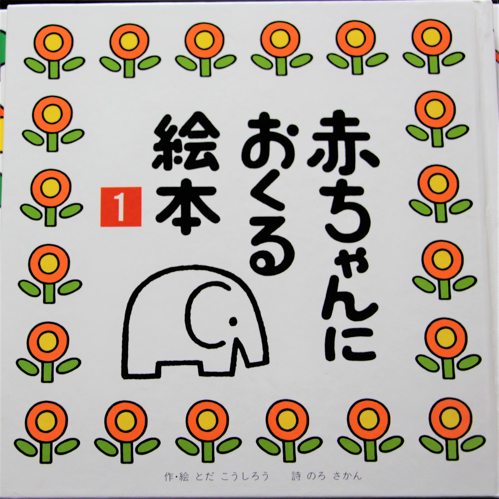
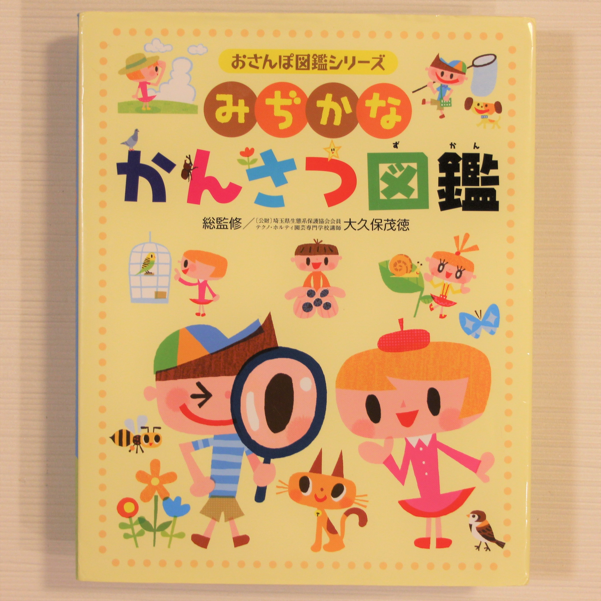

幼児向けのおすすめ絵本を紹介します
子どもにどんな絵本を読み聞かせたらよいか分からない、たくさんありすぎて悩んでいる。。。
そんな育児中の方のお役に立てたら嬉しいです。
０～２歳向け絵本

「赤ちゃんにおくる絵本」 １～３巻
- 出版社：戸田デザイン研究室
- 作・絵：とだ こうしろう
- 価格：各1,430円(税込）
１～２巻は絵と、描かれている物の名前がひらがなで書いてあるシンプルな作りですが、絵が可愛く、ひらがなも大きく読みやすいため、物の名前やひらがなに自然に興味を持つことができるようになります。
３巻は、「一つ、二つ、三つ」とページをめくりながら絵を見て、一緒に数を数えることができます。
３～４歳向け絵本

「しりとりしましょ！」
- 出版社：リーブル
- 作・絵：さいとう しのぶ
- 価格：1,980円(税込）
とにかくたくさんの食べ物のキャラクターが、しりとりの順番で登場します。お食事をしていたり、競争していたり、と見開きページごとにユニークな設定で描かれているので、絵の細かな部分についての会話も生まれ、大人も見ていて飽きません。
ボリュームはありますが、小さくて持ち運びしやすく、病院など待ち時間が見こまれる時や、長時間の移動のお供にも最適です。
５～６歳向け絵本

「みぢかな観察図鑑」
- 出版社：チャイルド本社
- 総監修：大久保 茂徳
- 価格：1,430円(税込）
子どもでも手に取りやすい大きさ、重さで図鑑の入門にピッタリです。
日常生活で出会う動物や植物の名前を質問されて、全てスラスラ答えるのはなかなか難しいもの…。何にでも興味を持つ年齢なので、この本があれば一緒に楽しく調べることができます。